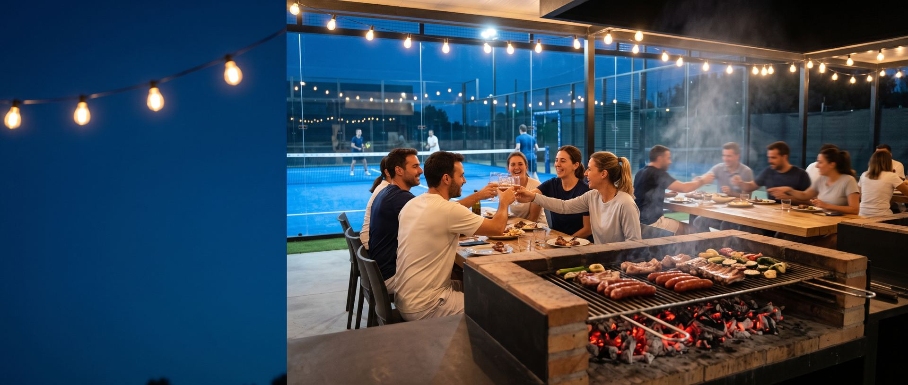
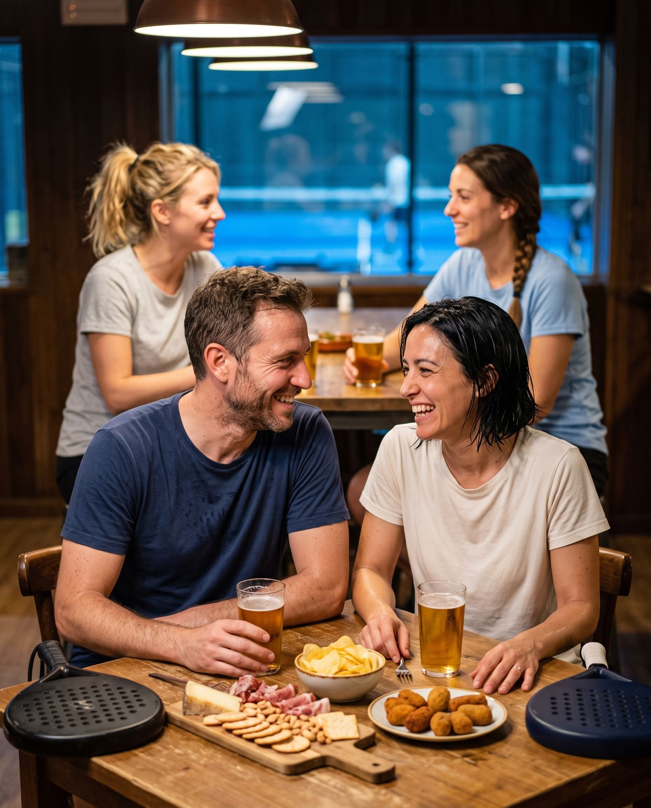

Hemos jugado un pozo y las pistas estaban genial. Nos han invitado después a choricito, morcilla y butifarra. Ha estado todo fenomenal y el personal super simpático. Vendremos a menudo a este sitio ahora que lo hemos descubierto.
José AntonioHace 7 meses · ★★★★★ GoogleBar y terraza
Bar y terraza en Alcorcón
Bar en invierno y terraza de verano con barbacoa. Picoteo al acabar el pozo.

Después del pozo
¿Dónde acabo después del partido?
Picoteo al acabar el pozo. Bar en invierno y terraza de verano con barbacoa: quédate un rato con quien has jugado.

Invierno y verano
Bar en invierno, terraza en verano
Bar en invierno y terraza de verano con barbacoa. Al acabar el pozo, picoteo para todos.
Lo que cuentan
El tercio de después
Las pistas está muy bien, gente agradable y la hamburguesa muy buena, entra de lujo después del pozo
VicenteHace 6 meses · ★★★★★ GoogleQue sol, que terraza, que agua calentita al acabar de jugar.... Pero después, no conozco un sitio con los tercios más fríos!!!!! Muy recomendable jugar en Alpha Padel.
TomásHace 6 meses · ★★★★★ GooglePreguntas
Antes de quedarte
¿Qué hay para picar después del pozo?
Picoteo para todos al acabar. Los jugadores cuentan en sus reseñas lo que les sirvieron; el detalle de cada día te lo dicen en el club.
¿Hay terraza todo el año?
Hay bar en invierno y terraza de verano con barbacoa.
¿Cómo sé qué pozo tiene picoteo?
Mira los pozos de fin de semana en Playtomic o llama al 622 783 139 y te lo confirman.